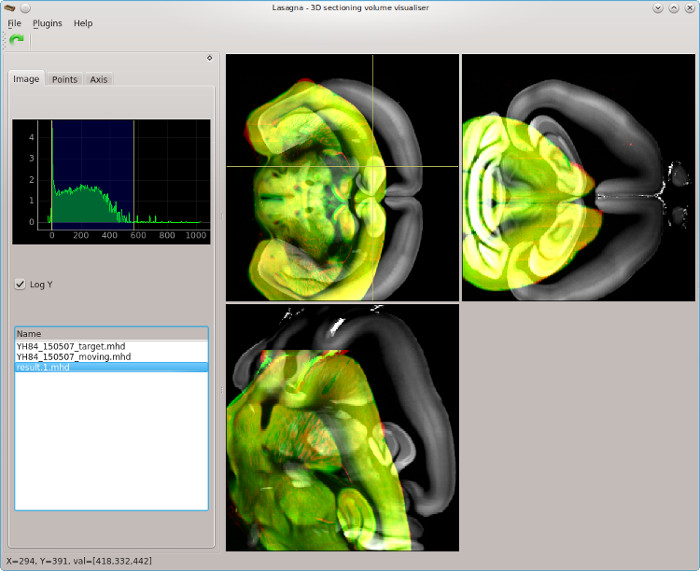

Lasagna - Python Volume Visualiser for 3-D data.

Concept
{% include text.txt %}Lasagna is a lightweight Python visualiser for 3D volume data and is still under heavy development. Lasagna was inspired by VV. Lasagna's key advantage over VV is that the core application is very lightweight, with all additional functionality provided by plugins that are easy to write in Python and PyQt.
Lasagna allows the user to visualise 3D volume data as three linked 2-D views which all zoom and pan together. Moving the mouse cursor in one view controls which slice (of the 3-D volume) is displayed in the other two views.
What data does Lasagna handle?
Lasagna loads 3D single-channel data sets in the form of multi-page TIFFs or MHD files. Lasagna currently only works on 3-D image stacks that can be loaded entirely into RAM.
What applications is Lasagna designed for?
Since Lasagna has a flexible plugin system, it can potentially be used for any application where visualising 3-D data is critical. That said, Lasagna is being specifically developed with the following tasks in mind:
- Assessing 3-D registration accuracy of one volume onto another by overlaying two volumes in different colours.
- Guiding registration by identifying analogous points in two different volumes.
- Exploration of the Allen Reference Atlas.
- Importing and overlaying of sparse points or traced structures (such as neuronal axons) onto a 3-D volume.
Current features
- Interactive exploration of one 3D volume.
- Overlay of a second volume onto the first. Useful for assessing the degree of alignment between two 3D samples.
- Loading of either TIFF stacks or MHD files, so can work well with Elastix.
- Interactive exploration of the ARA brain areas through a simple plugin.
- A simple plugin system: Python scripts with a particular format located in a particular directory are made accessible via a "Plugins" menu and can modify the behavior of lasagna by calling existing methods or modifying those methods via hooks.
- The zoom can be reset via a button and the scale modified by sliders on top of an image intensity histogram.
Installation
There is currently no installer. Lasagna is still aimed at more advanced users or Python developers. Lasagna runs on Python 2.7 and PyQt4. To run Lasagna, download the repository and make sure you have the following Python modules installed:
- tifffile [for importing TIFF files]
- vtk [for importing MHD files]
- numpy
- pyqtgraph 9.10
- yaml
- PyQt4
- tempfile
- urllib